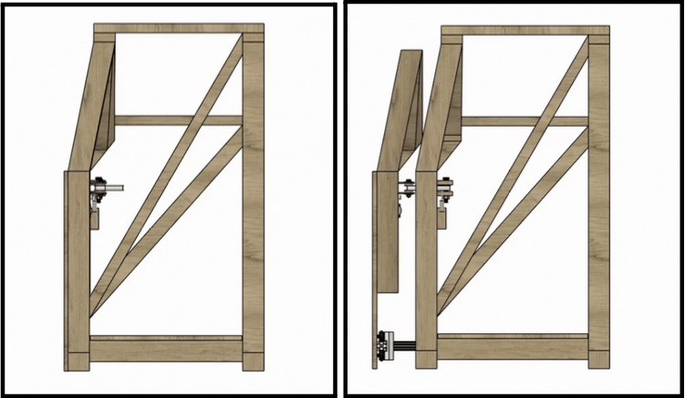
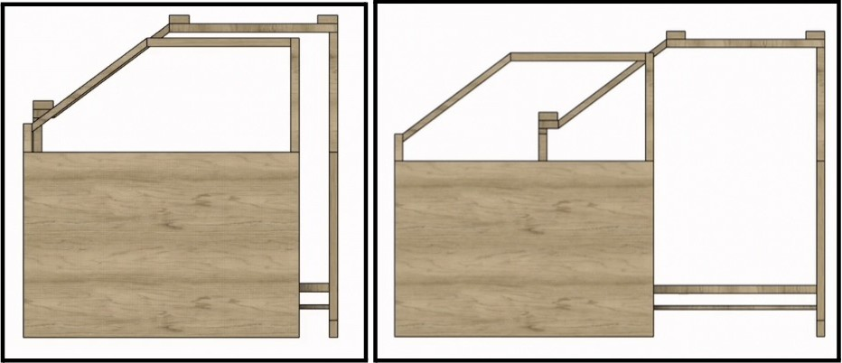
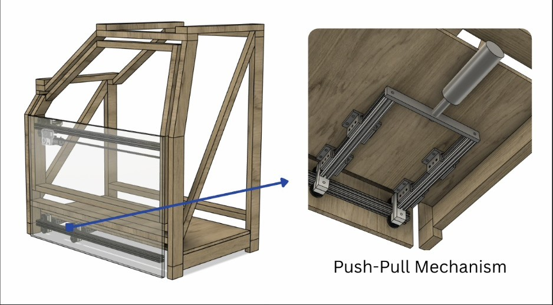
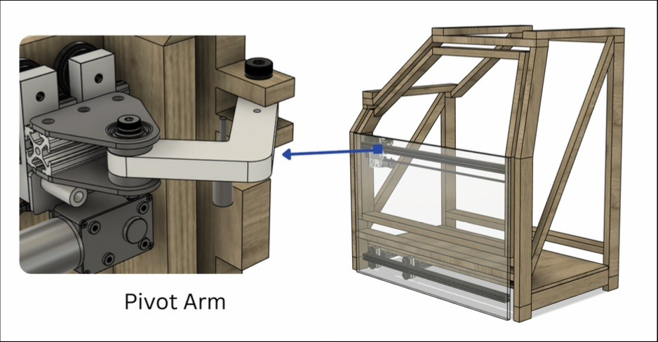
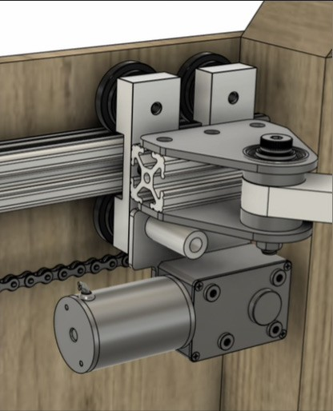
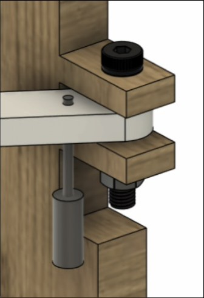

Stanford Mechanical Engineering senior capstone in partnership with the Volkswagen Innovation and Engineering Center California (IECC). We built a sliding door system that works like a van's automatic door, but for the front passenger seat. Instead of swinging on a hinge, the door first pushes straight out from the body and then slides toward the front of the car. That clears the whole opening for drivers with reduced mobility.
Read the Final Report ↗Motion A: the Push-Pull Mechanism drives the door straight out from the body along the y-axis, clearing the frame. Motion B: the Chain & Sprocket Mechanism then slides the door along the x-axis toward the front of the car, leaving the whole opening clear.


Creates the outward motion along the y-axis. It is a linear actuator driving an 80/20 aluminum frame under the floor, with rollers that carry the door's lower rail.

An L-shaped hinge mounted to the A-pillar and pinned to the door. It is the key link between the push-out and sliding motions. It lets the door move outward along the y-axis while supporting it, keeps it from rotating about the x-axis, and carries the Chain & Sprocket Mechanism, so the handoff between the two motions stays smooth and controlled.

A motor-driven chain and sprocket mounted on an 80/20 rail, with the chain attached directly to the door frame. Once the door is pushed out, it drives the door along the x-axis toward the front of the car at a steady, controlled speed, finishing the automatic opening sequence.

A small linear actuator under the pivot bracket on the A-pillar. When engaged, it drives a locating pin up into the Pivot Arm, holding the door in line with the frame.

We started with user research on how people with reduced mobility get in and out of vehicles, turned those findings into requirements, and built a full-scale wooden test rig of a front-passenger opening. We then brought it from concept to a validated, working mechanical system, with guidance from Volkswagen IECC engineers throughout.
The full capstone report is archived in the Stanford Digital Repository. It covers the research, design iterations, analysis, and prototype validation.
View on Stanford SearchWorks ↗